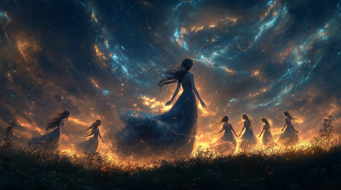

In Greek mythology, Mnemosyne is the Titaness of memory, an ancient and sacred power predating even the Olympians. After lying with Zeus for nine consecutive nights, she bore the Nine Muses—divine embodiments of artistic and intellectual inspiration.
Each Muse governs a domain of creativity: epic poetry, history, music, tragedy, dance, astronomy, comedy, and lyric poetry.
Mnemosyne’s gift to Zeus—and to the world—is not war or empire, but the eternal breath of art, song, and story.
The Memory of Muses
I whispered truth before the flame
I spoke the stars before they came
Each dream you breathe, each song you weave—
Was born in me, was born to leave
I gave him thought, I gave him skies—
And bore the voices gods baptize
Memory’s breath, muse of the dawn
Nine lights that rise when dreams are gone
From silent stone to roaring seas—
I am the voice that memory frees
He came to seek, he came to steal
The spark that time could not conceal
And from our night, the muses rose—
To seed the world with songs untold
With every name, with every sigh—
I carved a song that cannot die
Memory’s breath, muse of the dawn
Nine lights that rise when dreams are gone
From silent stone to roaring seas—
I am the voice that memory frees
Calliope, Clio, Erato, light—
Melpomene weeps in endless flight
Terpsichore’s dance, Urania’s skies—
Thalia laughs where history lies
Before gods reigned, before kings fell,
There was memory—and it was I.
Memory’s breath, muse of the dawn
Nine lights that rise when dreams are gone
In every heart, in every plea—
The song endures because of me
In whispered stars, in fading seas—
The muses sing, remembering me